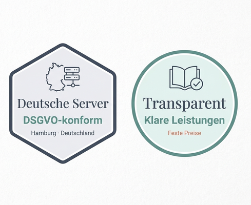

Wir sorgen dafür, dass Ihre Praxis-Website sicher, aktuell und professionell betreut wird – damit Sie sich auf Ihre Patienten konzentrieren können. Sicherheit, technische Compliance, Hosting auf deutschen Servern und laufende Wartung aus einer Hand.
In 60 Sekunden. Ohne Anmeldung. Ergebnis sofort sichtbar.
Die meisten Praxis-Websites werden einmal erstellt – und dann jahrelang nicht gewartet. Genau dort entstehen die Risiken, die niemand bemerkt, bis es zu spät ist.
Geben Sie Ihre Website-Adresse ein und sehen Sie sofort, wo Ihre Website technisch steht – SSL, Sicherheits-Header, WordPress-Status, Cookie-Consent und mehr.
Unser vollständiges Audit prüft Ihre Website tiefgehend – anschließend beheben wir die gefundenen Probleme direkt. Bis zu 4 Stunden Umsetzung inklusive.
Ihre Website bleibt dauerhaft sicher: Hosting auf deutschen Servern, Updates, Monitoring, Backups und persönlicher Support – ab 99 € im Monat.
0:00Wann wurde Ihre Praxis-Website zuletzt geprüft?
0:05Sicherheitslücken sieht man einer Website nicht an.
0:13Adresse eingeben. In rund 60 Sekunden steht das Ergebnis.
0:22Sie sehen sofort, wo Ihre Website steht — im Klartext erklärt.
0:32Ein fester Ansprechpartner in Hamburg — Antwort innerhalb von 24 Stunden.
0:40Das vollständige Audit geht tiefer — und wir beheben die Befunde direkt.
0:50Danach bleibt die Website sicher — zu einem festen monatlichen Preis.
1:01Kostenlos prüfen: hansaneuron.de/website-check
Sicherheits-Härtung, Schwachstellen-Behebung, Firewall-Konfiguration und laufende Sicherheits-Überwachung Ihrer Praxis-Website.
Wir identifizieren technische Compliance-Risiken: Cookie-Consent, SSL, Formulare, Einbindungen von Drittdiensten und fehlende Pflichtangaben-Verlinkungen.
Ihre Website läuft auf Servern in Deutschland – Datensouveränität, kurze Ladezeiten und ein Ansprechpartner für alles.
WordPress-, Theme- und Plugin-Updates werden regelmäßig, getestet und kontrolliert eingespielt – bevor Lücken ausgenutzt werden.
Erreichbarkeit, Sicherheit und Performance Ihrer Website werden automatisiert überwacht. Bei Auffälligkeiten reagieren wir, bevor Ihre Patienten etwas bemerken.
Automatische, regelmäßige Backups mit getesteter Wiederherstellung. Falls etwas passiert, ist Ihre Website schnell wieder da.
Jeder Care Plan enthält Hosting auf deutschen Servern, Updates, Sicherheits-Monitoring und Backup-Management. Sie wählen nur, wie viel Betreuung Ihre Praxis braucht.

Hanseatische Verlässlichkeit, deutsche Server-Standorte und ein persönlicher Ansprechpartner – kein anonymes Ticketsystem im Ausland.
Feste Preise, klare Leistungen, verständliche Berichte. Sie wissen jederzeit, was mit Ihrer Website passiert – ohne Fachchinesisch.
Als erfahrene KI-Berater unterstützen wir Praxen, die weiter denken: von automatisierter Dokumentenverarbeitung bis zu intelligenten Assistenten. Für unsere Care-Plan-Kunden – wenn die sichere Website-Basis steht.
Ob konkrete Frage oder erst einmal ein unverbindliches Gespräch – wir melden uns innerhalb von 24 Stunden. Oder starten Sie direkt mit dem kostenlosen Website-Check.